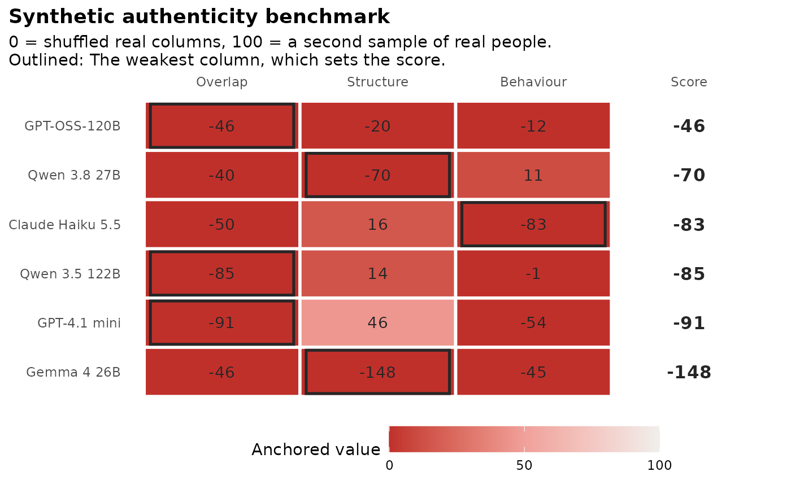

Experimental. authenticity_benchmark() scores several language
models on three indices and puts them in one table, with one row per
model:
Arguments
- synthetic
a named list with one element per model, each a list of attempts (data frames of responses), as in
synthetic_coverage().- real
a data frame of real responses to the same items.
- items
a data frame with one row per item:
item(column name),scale(ortrait, as in hexaco_items), an optionalfacetand an optional logicalreverse.- score
how to combine the anchored columns:
"weakest","mean","geometric"or a function (see Details).- weights
optional named vector of weights for
"mean"and"geometric", with namesoverlap,structureandbehaviour.- clean_real
compare against real respondents after removing those flagged by
flag_careless()? The default compares against all real respondents.- careless_rule
optional
rulepassed toflag_careless().- n_splits
number of real splits for the ceiling.
- n_floor
number of shuffled draws for the floor.
- ceiling_n
size of the ceiling samples:
"attempt"or"half".- fit_scales
the scales used for person fit.
NULLuses all scales;character(0)skips person fit (theperson_fitcolumn is thenNA).- cor
correlations for Structure:
"pearson"(the default, fast on many items) or"polychoric"(needs the polycor package; slow).- copula
add the Gaussian copula reference row (see Details).
- seed
random seed for breaking ties.
Value
An object of class sc_benchmark: A list with table (a tibble
with one row per model, sorted by score: model, reference (TRUE
for the copula row), attempts, score,
weakest, the anchored overlap, structure and behaviour, their
raw values (*_raw), and the lowest and highest anchored values over
the attempts), attempts (raw and anchored values per attempt),
anchors (floor and ceiling of each index), behaviour (the
synthetic_behaviour() result), careless (the flags, with
clean_real = TRUE) and settings. It has print(), tidy() and
autoplot() methods.
Details
Overlap: Do synthetic respondents land where real people land? For each scale, the real keyed scale scores are cut into deciles and Overlap is the sum over slices of the smaller of the synthetic and the real share, as in
synthetic_coverage(). The benchmark averages it over the scales.Structure: Do the items relate to each other as they do in real people? 100 minus 100 times the mean absolute difference between the real and the synthetic inter-item correlations of all items.
Behaviour: Do synthetic respondents answer the way real people do? See
synthetic_behaviour().
Anchoring. Each index \(X\) is rescaled to
\(A = 100 (X - X_{floor}) / (X_{ceiling} - X_{floor})\). The floor is a
dumb generator: Each item column is drawn independently, with
replacement, from the real data, which keeps every item's distribution
but breaks people apart (n_floor draws). The ceiling scores one random
sample of real people against another, disjoint one (n_splits splits).
With ceiling_n = "attempt" (the default) both samples have the size of
a typical synthetic attempt (the median), so the sampling noise is
comparable; with "half" they are the two halves of the real data. The
floor draws have the same size.
Negative values. The floor uses the real data, which a language model
never sees, so it is a strict baseline. A value below 0 means the model is
further from real people than respondents pieced together from shuffled
real answers: For example, its respondents bunch into fewer score deciles
(Overlap), its items correlate more than real ones (Structure), or its
answers are tidier than real people's (Behaviour). The table shows the
values unclamped, and gg_benchmark() colours them from -100 (red) to 100 (blue).
Score. score = "weakest" (the default) takes the lowest of the three
anchored columns and names it in weakest. "mean" takes the (weighted)
mean, "geometric" the (weighted) geometric mean of the values clamped
to 0 to 100, and a function of three arguments (overlap, structure,
behaviour) gives any other score.
Copula reference. With copula = TRUE, a row named "Gaussian copula
(reference)" is added. Its respondents come from synthetic_copula(),
which keeps every item's distribution and the correlations between items
of the real data and nothing else. It has the median number and size of
the synthetic attempts. A model below this row does no better than a
generator without a language model. The copula is fitted to the real
target, so it is an in-sample reference (reference = TRUE in the
table), not a competitor. For the same reason, its Overlap and Structure
can be above 100: It reproduces the full real sample more closely than
a second, smaller sample of real people does.
Synthetic respondents are experimental: The benchmark compares models and supports decisions about them. It does not show that synthetic data can replace a field test.
Examples
h <- hexaco_items[hexaco_items$trait %in% c("H", "C"), ]
real <- hexaco_real[hexaco_real$country == "Canada", ]
ca <- hexaco_llm[hexaco_llm$country == "Canada" & hexaco_llm$attempt <= 2, ]
syn <- lapply(split(ca, ca$model, drop = TRUE), function(m) split(m, m$attempt))
bm <- authenticity_benchmark(syn, real, h, fit_scales = character(0),
n_splits = 5, n_floor = 5)
bm
#> Synthetic authenticity benchmark (experimental)
#> 80 items, 1708 real respondents. Score: weakest.
#>
#> model attempts Overlap Structure Behaviour Score Weakest
#> GPT-OSS-120B 2 -46 -20 -12 -46 Overlap
#> Qwen 3.8 27B 2 -40 -70 11 -70 Structure
#> Claude Haiku 5.5 2 -50 16 -83 -83 Behaviour
#> Qwen 3.5 122B 2 -85 14 -1 -85 Overlap
#> GPT-4.1 mini 2 -91 46 -54 -91 Overlap
#> Gemma 4 26B 2 -46 -148 -45 -148 Structure
#>
#> Anchors (raw, floor to ceiling, samples of 500): Overlap 52.1 to 93.2, Structure 84.3 to 94.6, Behaviour 58.2 to 92.5.
#> 0 = shuffled real columns, 100 = a second sample of real people.
gg_benchmark(bm)

# \donttest{
# all 240 items, with person fit on every trait
ca <- hexaco_llm[hexaco_llm$country == "Canada", ]
syn <- lapply(split(ca, ca$model, drop = TRUE), function(m) split(m, m$attempt))
bm <- authenticity_benchmark(syn, real, hexaco_items)
bm
#> Synthetic authenticity benchmark (experimental)
#> 240 items, 1708 real respondents. Score: weakest.
#>
#> model attempts Overlap Structure Behaviour Score Weakest
#> Qwen 3.5 122B 10 -37 14 10 -37 Overlap
#> GPT-OSS-120B 10 -22 -45 -15 -45 Structure
#> Claude Haiku 5.5 10 -42 17 -54 -54 Behaviour
#> GPT-4.1 mini 10 -59 33 -24 -59 Overlap
#> Qwen 3.8 27B 10 -8 -62 0 -62 Structure
#> Gemma 4 26B 10 -45 -238 -51 -238 Structure
#>
#> Anchors (raw, floor to ceiling, samples of 500): Overlap 50.9 to 92.7, Structure 87.8 to 94.7, Behaviour 43.4 to 92.6.
#> 0 = shuffled real columns, 100 = a second sample of real people.
# }